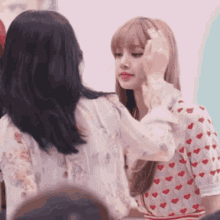

Analisem os jogos que aprendemos a fazer durante o ano. Pensem em como podemos adaptar um desses jogos para ensinar as pessoas alguma coisa sobre soluções de acessibilidade.
Vocês podem também escolher fazer uma animação, mas para isto, precisaram incluir tanto um diálogo quanto mudanças de cena;
Para a primeira aula, nós vamos nos preocupar em analisar cada um desses jogos e
discutir sobre os jogos e sobre acessibilidade no seu grupo.
Depois anotar em papel as seguintes informações:
Na próxima aula, vamos começar a fazer nosso projeto.
